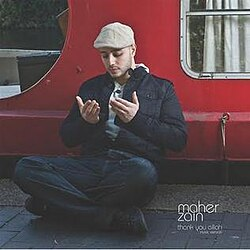
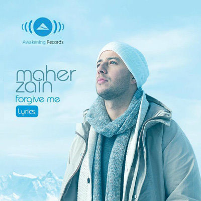
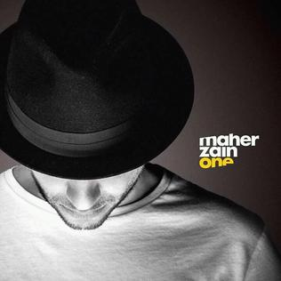

Other Artists

Maher zain
Maher Zain
Maher Zain is a Swedish-Lebanese singer, songwriter, and music producer known for his inspiring Islamic and spiritual songs. Born on July 16, 1981, in Tripoli, Lebanon, he moved to Sweden with his family at a young age. Maher Zain gained worldwide fame after releasing his debut album Thank You Allah in 2009, which blended modern pop and R&B with faith-based themes.
Portfolio

Thank You Allah (2009)
His debut album featuring hits like Insha Allah and For the Rest of My Life, which made him famous worldwide.

Forgive Me (2012)
A powerful album with emotional songs such as Number One for Me and So Soon, focusing on love, forgiveness, and faith.

One (2016)
Includes tracks like The Power and Peace Be Upon You, spreading messages of hope and unity.
Hürriyet (2021)
A collaboration project that reflects Maher Zain’s continued influence and his mix of modern sounds with spiritual themes.